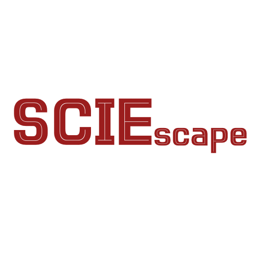

Skip to content
ECONOMICS · POLITICS · PHILOSOPHY
AN OPEN MIND. A WIDER WORLD.

Ideas beyond
the syllabus.
A space for curiosity
↗
Menu
＋
Home
Economics
Politics
Philosophy
About us
Search
Search essays and reading guides
Search
↗